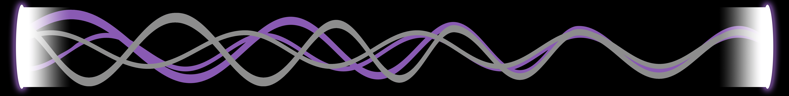

<!-- * * * * * * * * * * * * * * * * * * * * * * * * * * * * * * * -->
<!-- * * * * * * * * * * * The content below * * * * * * * * * * * -->
<!-- * * * * * * * * * * is only a placeholder * * * * * * * * * * -->
<!-- * * * * * * * * * * and can be replaced. * * * * * * * * * * * -->
<!-- * * * * * * * * * * * * * * * * * * * * * * * * * * * * * * * -->
<!-- * * * * * * * * * Delete the template below * * * * * * * * * * -->
<!-- * * * * * * * to get started with your project! * * * * * * * * -->
<!-- * * * * * * * * * * * * * * * * * * * * * * * * * * * * * * * -->

<h1 id="title" class="syncopate text-white text-center">MILHOUSE</h1>
    <nav class="navbar navbar-expand-md navbar-dark bg-black">
        <button (click)="goBack()" class="back-button" mat-icon-button>
            <mat-icon>arrow_back</mat-icon>
          </button>
      
      <mat-menu id="mat-menu" #appMenu="matMenu">
          <button routerLink="/lists" class="menu-button" mat-menu-item>Lists</button>
          <button routerLink="/memories" class="menu-button" mat-menu-item>Memories</button>
          <button onclick="window.location.href='/auth'" class="menu-button" mat-menu-item>Log Out</button>
      </mat-menu>
      <button class="apps-button" mat-icon-button [matMenuTriggerFor]="appMenu">
        <mat-icon>apps</mat-icon>
      </button>
    </nav>

    <!--<mat-toolbar id="toolbar" color="primary" fixedInViewport="true">

        <button (click)="goBack()" class="back-button" mat-icon-button>
            <mat-icon>arrow_back</mat-icon>
          </button>

        <span id="main-title">{{title}}</span>

        <mat-menu id="mat-menu" #appMenu="matMenu">
            <button class="menu-button" mat-menu-item>Settings</button>
            <button (click)="downloadBackup()" *ngIf="backup" class="menu-button" mat-menu-item>Backup Playlist</button>
            <button onclick="window.location.href='/login'" class="menu-button" mat-menu-item>Log Out</button>
        </mat-menu>
        <button class="options-button" mat-icon-button [matMenuTriggerFor]="appMenu">
          <mat-icon>more_vert</mat-icon>
        </button>
    </mat-toolbar>-->

<!-- * * * * * * * * * * * * * * * * * * * * * * * * * * * * * * * -->
<!-- * * * * * * * * * * * The content above * * * * * * * * * * * -->
<!-- * * * * * * * * * * is only a placeholder * * * * * * * * * * -->
<!-- * * * * * * * * * * and can be replaced. * * * * * * * * * * * -->
<!-- * * * * * * * * * * * * * * * * * * * * * * * * * * * * * * * -->
<!-- * * * * * * * * * * End of Placeholder * * * * * * * * * * * -->
<!-- * * * * * * * * * * * * * * * * * * * * * * * * * * * * * * * -->


<router-outlet></router-outlet>
